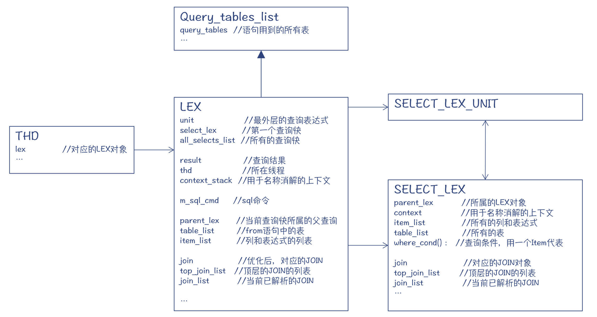
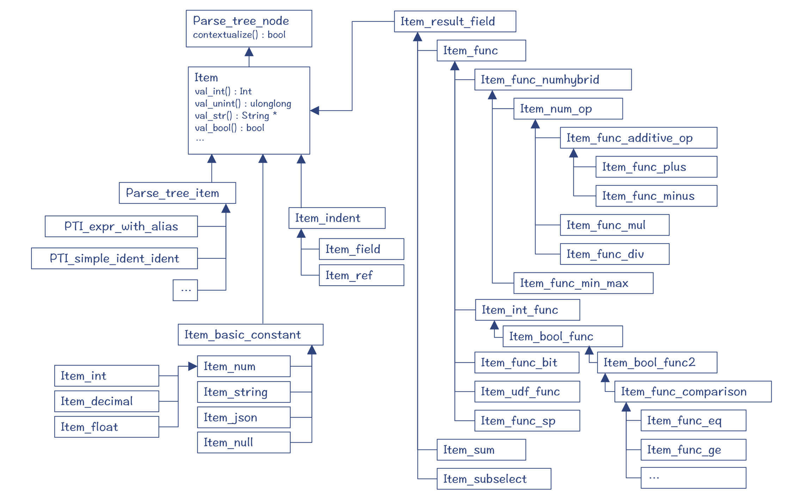
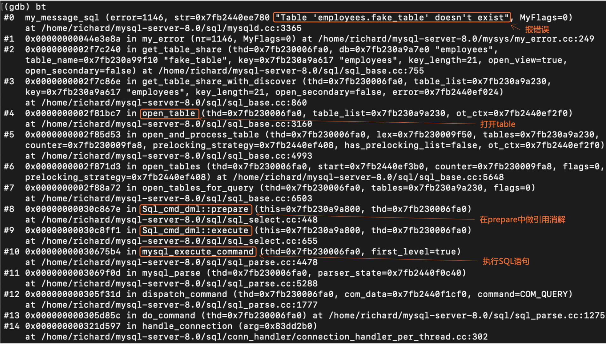
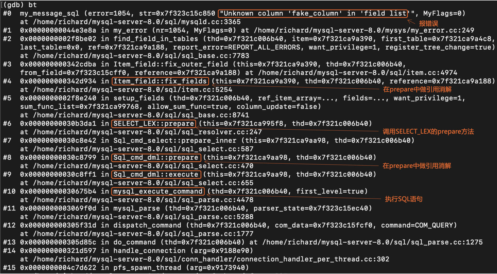
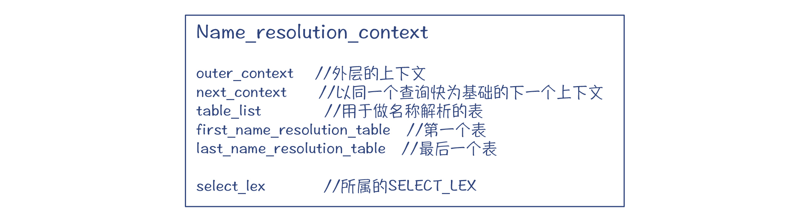
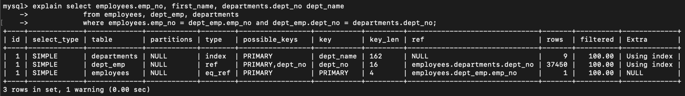
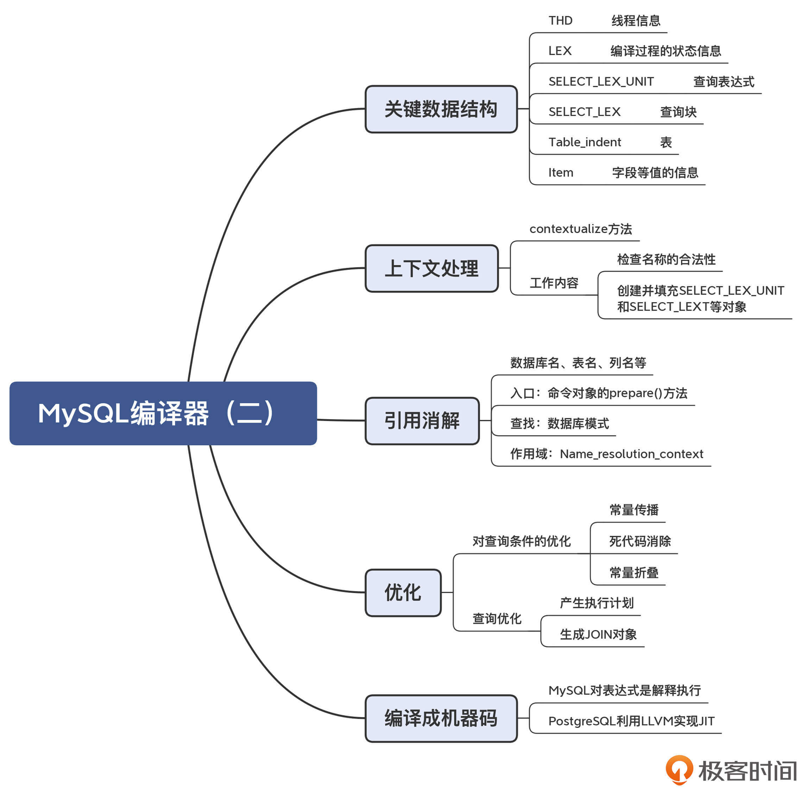

- 00 学习指南 如何学习这门编译原理实战课？.md.html
- 00 开篇词 在真实世界的编译器中游历.md.html
- 01 编译的全过程都悄悄做了哪些事情？.md.html
- 02 词法分析：用两种方式构造有限自动机.md.html
- 03 语法分析：两个基本功和两种算法思路.md.html
- 04 语义分析：让程序符合语义规则.md.html
- 05 运行时机制：程序如何运行，你有发言权.md.html
- 06 中间代码：不是只有一副面孔.md.html
- 07 代码优化：跟编译器做朋友，让你的代码飞起来.md.html
- 08 代码生成：如何实现机器相关的优化？.md.html
- 09 Java编译器（一）：手写的编译器有什么优势？.md.html
- 10 Java编译器（二）：语法分析之后，还要做些什么？.md.html
- 11 Java编译器（三）：属性分析和数据流分析.md.html
- 12 Java编译器（四）：去除语法糖和生成字节码.md.html
- 13 Java JIT编译器（一）：动手修改Graal编译器.md.html
- 14 Java JIT编译器（二）：Sea of Nodes为何如此强大？.md.html
- 15 Java JIT编译器（三）：探究内联和逃逸分析的算法原理.md.html
- 16 Java JIT编译器（四）：Graal的后端是如何工作的？.md.html
- 17 Python编译器（一）：如何用工具生成编译器？.md.html
- 18 Python编译器（二）：从AST到字节码.md.html
- 19 Python编译器（三）：运行时机制.md.html
- 20 JavaScript编译器（一）：V8的解析和编译过程.md.html
- 21 JavaScript编译器（二）：V8的解释器和优化编译器.md.html
- 22 Julia编译器（一）：如何让动态语言性能很高？.md.html
- 23 Julia编译器（二）：如何利用LLVM的优化和后端功能？.md.html
- 24 Go语言编译器：把它当作教科书吧.md.html
- 25 MySQL编译器（一）：解析一条SQL语句的执行过程.md.html
- 26 MySQL编译器（二）：编译技术如何帮你提升数据库性能？.md.html
- 27 课前导读：学习现代语言设计的正确姿势.md.html
- 28 前端总结：语言设计也有人机工程学.md.html
- 29 中端总结：不遗余力地进行代码优化.md.html
- 30 后端总结：充分发挥硬件的能力.md.html
- 31 运行时（一）：从0到语言级的虚拟化.md.html
- 32 运行时（二）：垃圾收集与语言的特性有关吗？.md.html
- 33 并发中的编译技术（一）：如何从语言层面支持线程？.md.html
- 34 并发中的编译技术（二）：如何从语言层面支持协程？.md.html
- 35 并发中的编译技术（三）：Erlang语言厉害在哪里？.md.html
- 36 高级特性（一）：揭秘元编程的实现机制.md.html
- 37 高级特性（二）：揭秘泛型编程的实现机制.md.html
- 38 综合实现（一）：如何实现面向对象编程？.md.html
- 39 综合实现（二）：如何实现函数式编程？.md.html
- 40 成果检验：方舟编译器的优势在哪里？.md.html
- 不定期加餐1 远程办公，需要你我具备什么样的素质？.md.html
- 不定期加餐2 学习技术的过程，其实是训练心理素质的过程.md.html
- 不定期加餐3 这几年，打动我的两本好书.md.html
- 不定期加餐4 从身边的牛人身上，我学到的一些优秀品质.md.html
- 不定期加餐5 借助实例，探究C++编译器的内部机制.md.html
- 划重点 7种编译器的核心概念与算法.md.html
- 期末答疑与总结 再次审视学习编译原理的作用.md.html
- 热点问题答疑 如何吃透7种真实的编译器？.md.html
- 用户故事 易昊：程序员不止有Bug和加班，还有诗和远方.md.html
- 知识地图 一起来复习编译技术核心概念与算法.md.html
- 结束语 实战是唯一标准！.md.html
- 捐赠
26 MySQL编译器（二）：编译技术如何帮你提升数据库性能？
你好，我是宫文学。今天这一讲，我们继续来探究MySQL编译器。
通过上一讲的学习，你已经了解了MySQL编译器是怎么做词法和语法分析的了。那么在做完语法分析以后，MySQL编译器又继续做了哪些处理，才能成功地执行这个SQL语句呢？
所以今天，我就带你来探索一下MySQL的实现机制，我会把重点放在SQL的语义分析和优化机制上。当你学完以后，你就能真正理解以下这些问题了：
- 高级语言的编译器具有语义分析功能，那么MySQL编译器也会做语义分析吗？它有没有引用消解问题？有没有作用域？有没有类型检查？
- MySQL有没有类似高级语言的那种优化功能呢？
好，让我们开始今天的探究吧。不过，在讨论MySQL的编译过程之前，我想先带你了解一下MySQL会用到的一些重要的数据结构，因为你在解读代码的过程中经常会见到它们。
认识MySQL编译器的一些重要的数据结构
第一组数据结构，是下图中的几个重要的类或结构体，包括线程、保存编译上下文信息的LEX，以及保存编译结果SELECT_LEX_UNIT和SELECT_LEX。

图1：MySQL编译器的中的几个重要的类和结构体
首先是THD，也就是线程对象。对于每一个客户端的连接，MySQL编译器都会启动一个线程来处理它的查询请求。
THD中的一个重要数据成员是LEX对象。你可以把LEX对象想象成是编译SQL语句的工作区，保存了SQL语句编译过程中的上下文信息，编译器会把编译的成果放在这里，而编译过程中所需要的信息也是从这里查找。
在把SQL语句解析完毕以后，编译器会形成一些结构化的对象来表示一个查询。其中SELECT_LEX_UNIT结构体，就代表了一个查询表达式（Query Expression）。一个查询表达式可能包含了多个查询块，比如使用UNION的情况。
而SELECT_LEX则代表一个基本的查询块（Query Block），它里面的信息包括了所有的列和表达式、查询用到的表、where条件等。在SELECT_LEX中会保存查询块中涉及的表、字段和表达式等，它们也都有对应的数据结构。
第二组需要了解的数据结构，是表示表、字段等信息的对象。Table_ident对象保存了表的信息，包括数据库名、表名和所在的查询语句（SELECT_LEX_UNIT对象）。
图2：Table_indent对象，代表一个表
而字段和表达式等表示一个值的对象，用Item及其子类来表示。SQL语句中的每个字段、每个计算字段，最后都对应一个Item。where条件，其实也是用一个Item就能表示。具体包括：
- 字段（Item_field）。
- 各种常数，包括数字、字符和null等（Item_basic_constant）。
- 能够产生出值的运算（Item_result_field），包括算术表达式（Item_num_op）、存储过程（Item_func_sp）、子查询（Item_subselect）等。
- 在语法分析过程中产生的Item（Parse_tree_item）。它们是一些占位符，因为在语法分析阶段，不容易一下子创建出真正的Item，这些Parse_tree_item需要在上下文分析阶段，被替换成真正的Item。

图3：Item及其子类
好了，上面这些就是MySQL会用到的最核心的一些数据结构了。接下来的编译工作，就会生成和处理上述的数据结构。
上下文分析
我们先来看一下MySQL编译器的上下文分析工作。
你已经知道，语法分析仅仅完成的是上下文无关的分析，还有很多的工作，需要基于上下文来做处理。这些工作，就属于语义分析。
MySQL编译器中，每个AST节点，都会有一个contextualize()方法。从这个方法的名称来看，你就能知道它是做上下文处理的（contextualize，置于上下文中）。
对一个Select语句来说，编译器会调用其根节点PT_select_stmt的contextualize()方法，从而深度遍历整个AST，并调用每个节点的contextualize()方法。
那么，MySQL编译器的上下文处理，都完成了什么工作呢？
首先，是检查数据库名、表名和字段名是否符合格式要求（在table.cc中实现）。
比如，MySQL会规定表名、字段名等名称不能超过64个字符，字段名不能包含ASCII值为255的字符，等等。这些规则在词法分析阶段是不检查的，要留在语义分析阶段检查。
然后，创建并填充SELECT_LEX_UNIT和SELECT_LEX对象。
前面我提到了，SELECT_LEX_UNIT和SELECT_LEX中，保存了查询表达式和查询块所需的所有信息，依据这些信息，MySQL就可以执行实际的数据库查询操作。
那么，在contextualize的过程中，编译器就会生成上述对象，并填充它们的成员信息。
比如，对于查询中用到的表，在语法分析阶段就会生成Table_ident对象。但其中的数据库名称可能是缺失的，那么在上下文的分析处理当中，就会被编译器设置成当前连接所采用的默认数据库。这个信息可以从线程对象（THD）中获得，因为每个线程对应了一个数据库连接，而每个数据库连接是针对一个具体的数据库的。
好了，经过上下文分析的编译阶段以后，我们就拥有了可以执行查询的SELECT_LEX_UNIT和SELECT_LEX对象。可是，你可能会注意到一个问题：为什么在语义分析阶段，MySQL没有做引用的消解呢？不要着急，接下来我就给你揭晓这个答案。
MySQL是如何做引用消解的？
我们在SQL语句中，会用到数据库名、表名、列名、表的别名、列的别名等信息，编译器肯定也需要检查它们是不是正确的。这就是引用消解（或名称消解）的过程。一般编译器是在语义分析阶段来做这项工作的，而MySQL是在执行SQL命令的时候才做引用消解。
引用消解的入口是在SQL命令的的prepare()方法中，它会去检查表名、列名都对不对。
通过GDB调试工具，我们可以跟踪编译器做引用消解的过程。你可以在my_message_sql()函数处设个断点，然后写个SQL语句，故意使用错误的表名或者列名，来看看MySQL是在什么地方检查出这些错误的。
比如说，你可以执行“select * from fake_table”，其中的fake_table这个表，在数据库中其实并不存在。
下面是打印出的调用栈。你会注意到，MySQL在准备执行SQL语句的过程中，会试图去打开fake_table表，这个时候编译器就会发现这个表不存在。

你还可以再试一下“select fake_column from departments”这个语句，也一样会查出，fake_column并不是departments表中的一列。

那么，MySQL是如何知道哪些表和字段合法，哪些不合法的呢？
原来，它是通过查表的定义，也就是数据库模式信息，或者可以称为数据字典、元数据。MySQL在一个专门的库中，保存了所有的模式信息，包括库、表、字段、存储过程等定义。
你可以跟高级语言做一下类比。高级语言，比如说Java也会定义一些类型，类型中包含了成员变量。那么，MySQL中的表，就相当于高级语言的类型；而表的字段（或列）就相当于高级语言的类型中的成员变量。所以，在这个方面，MySQL和高级语言做引用消解的思路其实是一样的。
但是，高级语言在做引用消解的时候有作用域的概念，那么MySQL有没有类似的概念呢？
有的。举个例子，假设一个SQL语句带了子查询，那么子查询中既可以引用本查询块中的表和字段，也可以引用父查询中的表和字段。这个时候就存在了两个作用域，比如下面这个查询语句：
select dept_name from departments where dept_no in
(select dept_no from dept_emp
where dept_name != 'Sales' #引用了上一级作用域中的字段
group by dept_no
having count(*)> 20000)
其中的dept_name字段是dept_emp表中所没有的，它其实是上一级作用域中departments表中的字段。
提示：这个SQL当然写得很不优化，只是用来表现作用域的概念。
好。既然要用到作用域，那么MySQL的作用域是怎么表示的呢？
这就要用到Name_resolution_context对象。这个对象保存了当前作用域中的表，编译器可以在这些表里查找字段；它还保存了对外层上下文的引用（outer_context），这样MySQL就可以查找上一级作用域中的表和字段。

图4：MySQL用来表示作用域的对象
好了，现在你就对MySQL如何做引用消解非常了解了。
我们知道，对于高级语言的编译器来说，接下来它还会做一些优化工作。那么，MySQL是如何做优化的呢？它跟高级语言编译器的优化工作相比，又有什么区别呢？
MySQL编译器的优化功能
MySQL编译器的优化功能主要都在sql_optimizer.cc中。就像高级语言一样，MySQL编译器会支持一些常见的优化。我来举几个例子。
第一个例子是常数传播优化（const propagation）。假设有一个表foo，包含了x和y两列，那么SQL语句：“select * from foo where x = 12 and y=x”，会被优化成“select * from foo where x = 12 and y = 12”。你可以在propagate_cond_constants()函数上加个断点，查看常数传播优化是如何实现的。
第二个例子是死代码消除。比如，对于SQL语句：“select * from foo where x=2 and y=3 and x”，编译器会把它优化为“select * from foo where x=2 and y=3”，把“x”去掉了，这是因为x肯定是小于y的。该功能的实现是在remove_eq_conds()中。
第三个例子是常数折叠。这个优化工作我们应该很熟悉了，主要是对各种条件表达式做折叠，从而降低计算量。其实现是在sql_const_folding.cc中。
你要注意的是，上述的优化主要是针对条件表达式。因为MySQL在执行过程中，对于每一行数据，可能都需要执行一遍条件表达式，所以上述优化的效果会被放大很多倍，这就好比针对循环体的优化，是一个道理。
不过，MySQL还有一种特殊的优化，是对查询计划的优化。比如说，我们要连接employees、dept_emp和departments三张表做查询，数据库会怎么做呢？
最笨的办法，是针对第一张表的每条记录，依次扫描第二张表和第三张表的所有记录。这样的话，需要扫描多少行记录呢？是三张表的记录数相乘。基于我们的示例数据库的情况，这个数字是8954亿。
上述计算其实是做了一个笛卡尔积，这会导致处理量的迅速上升。而在数据库系统中，显然不需要用这么笨的方法。
你可以用explain语句，让MySQL输出执行计划，下面我们来看看MySQL具体是怎么做的：
explain select employees.emp_no, first_name,
departments.dept_no dept_name
from employees, dept_emp, departments
where employees.emp_no = dept_emp.emp_no
and dept_emp.dept_no = departments.dept_no;
这是MySQL输出的执行计划：

从输出的执行计划里，你能看出，MySQL实际的执行步骤分为了3步：
- 第1步，通过索引，遍历departments表；
- 第2步，通过引用关系（ref），找到dept_emp表中，dept_no跟第1步的dept_no相等的记录，平均每个部门在dept_emp表中能查到3.7万行记录；
- 第3步，基于第2步的结果，通过等值引用（eq_ref）关系，在employees表中找到相应的记录，每次找到的记录只有1行。这个查找可以通过employees表的主键进行。
根据这个执行计划来完成上述的操作，编译器只需要处理大约63万行的数据。因为通过索引查数据相比直接扫描表来说，处理每条记录花费的时间比较长，所以我们假设前者花费的时间是后者的3倍，那么就相当于扫描了63*3=189万行表数据，这仍然仅仅相当于做笛卡尔积的47万分之一。我在一台虚拟机上运行该SQL花费的时间是5秒，而如果使用未经优化的方法，则需要花费27天！
通过上面的例子，你就能直观地理解做查询优化的好处了。MySQL会通过一个JOIN对象，来为一个查询块（SELECT_LEX）做查询优化，你可以阅读JOIN的方法，来看看查询优化的具体实现。关于查询优化的具体算法，你需要去学习一下数据库的相关课程，我在本讲末尾也推荐了一点参考资料，所以我这里就不展开了。
从编译原理的角度来看，我们可以把查询计划中的每一步，看做是一条指令。MySQL的引擎，就相当于能够执行这些指令的一台虚拟机。
如果再做进一步了解，你就会发现，MySQL的执行引擎和存储引擎是分开的。存储引擎提供了一些基础的方法（比如通过索引，或者扫描表）来获取表数据，而做连接、计算等功能，是在MySQL的执行引擎中完成的。
好了，现在你就已经大致知道了，一条SQL语句从解析到执行的完整过程。但我们知道，普通的高级语言在做完优化后，生成机器码，这样性能更高。那么，是否可以把SQL语句编译成机器码，从而获得更高的性能呢？
能否把SQL语句编译成机器码？
MySQL编译器在执行SQL语句的过程中，除了查找数据、做表间连接等数据密集型的操作以外，其实还有一些地方是需要计算的。比如：
- where条件：对每一行扫描到的数据都需要执行一次。
- 计算列：有的列是需要计算出来的。
- 聚合函数：像sum、max、min等函数，也是要对每一行数据做一次计算。
在研究MySQL的过程中，你会发现上述计算都是解释执行的。MySQL做解释执行的方式，基本上就是深度遍历AST。比如，你可以对代表where条件的Item求值，它会去调用它的下级节点做递归的计算。这种计算过程和其他解释执行的语言差不多，都是要在运行时判断数据的类型，进行必要的类型转换，最后执行特定的运算。因为很多的判断都要在运行时去做，所以程序运行的性能比较低。
另外，由于MySQL采用的是解释执行机制，所以它在语义分析阶段，其实也没有做类型检查。在编译过程中，不同类型的数据在运算的时候，会自动进行类型转换。比如，执行“select'2' + 3”，MySQL会输出5，这里就把字符串'2'转换成了整数。
那么，我们能否把这些计算功能编译成本地代码呢？
因为我们在编译期就知道每个字段的数据类型了，所以编译器其实是可以根据这些类型信息，生成优化的代码，从而提升SQL的执行效率。
这种思路理论上是可行的。不过，目前我还没有看到MySQL在这方面的工作，而是发现了另一个数据库系统PostgreSQL，做了这方面的优化。
PostgreSQL的团队发现，如果解释执行下面的语句，表达式计算所用的时间，占到了处理一行记录所需时间的56%。而基于LLVM实现JIT以后（编译成机器码执行），所用的时间只占到总执行时间的6%，这就使得SQL执行的整体性能整整提高了一倍。
select count(*) from table_name where (x + y) > 100
中国用户对MySQL的用量这么大，如果能做到上述的优化，那么仅仅因此而减少的碳排放，就是一个很大的成绩！所以，你如果有兴趣的话，其实可以在这方面尝试一下！
课程小结
这一讲我们分析了MySQL做语义分析、优化和执行的原理，并探讨了一下能否把SQL编译成本地代码的问题。你要记住以下这些要点：
- MySQL也会做上下文分析，并生成能够代表SQL语句的内部数据结构；
- MySQL做引用消解要基于数据库模式信息，并且也支持作用域；
- MySQL会采用常数传播等优化方法，来优化查询条件，并且要通过查询优化算法，形成高效的执行计划；
- 把SQL语句编译成机器码，会进一步提升数据库的性能，并降低能耗。
我把相应的知识点总结成了思维导图，供你参考：

总结这两讲对MySQL所采用的编译技术介绍，你会发现这样几个很有意思的地方：
- 第一，编译技术确实在数据库系统中扮演了很重要的作用。
- 第二，数据库编译SQL语句的过程与高级语言有很大的相似性，它们都包含了词法分析、语法分析、语义分析和优化等处理。你对编译技术的了解，能够指导你更快地看懂MySQL的运行机制。另外，如果你也要设计类似的系统级软件，这就是一个很好的借鉴。
一课一思
关系数据库是通过内置的DSL编译器来驱动运行的软件。那么，你还知道哪些软件是采用这样的机制来运行的？你如果去实现这样的软件，能从MySQL的实现思路里借鉴哪些思路？欢迎在留言区分享你的观点。
参考资料
如果要加深对MySQL内部机制的了解，我推荐两本书：一本是OReilly的《Understanding MySQL Internals》，第二本是《Expert MySQL》。
© 2019 - 2023 Liangliang Lee. Powered by gin and hexo-theme-book.